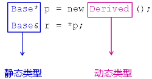
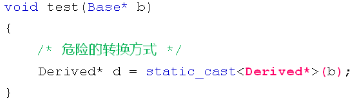

1，为什么会提出类型识别概念呢？
1，为什么在 C 语言中没有提出这个概念呢，就是因为在 C++ 中引入了面向对象的特性，面向对象里面有一个非常重要的原则就是赋值兼容性原则；
2，在面向对象中可能出现下面的情况：
1，基类指针指向子类对象；
2，基类引用成为子类对象的别名；
3，示意图：

1，p 指针字面意思是用来指向父类对象，而 p 又指向了子类对象；
2，当得到 p 指针后，我们是否有能力判断当前指针指向的是父类对象还是子类对象吗？目前没有办法通过一个父类指针来判断它指向的究竟是父类对象还是一个子类对象；
3，上图中展示的指针 p “静态类型”是 Base*，“静态类型”是指针它期望的类型，赋值兼容性使得 p 有可能指向的不是它期望的类型，而是子类类型，这时指针所指向的类型就叫做“动态类型”；
4，引用 r 静态类型是 Base&，r 的本意是引用父类的别名，但由于赋值兼容性，它也可以引用子类的别名，无法确定它的别名究竟是父类别名还是子类别名；
3，类型识别：
1，静态类型：
1，变量（对象）自身的类型；
1，写代码时就可以完全确定；
2，动态类型：
1，指针（引用）所指向对象的实际类型；
1，写代码时确定不了；

1，b 在代码运行时不一定指向父类对象，它有可能指向一个子类对象，因此 b 指针指向的是动态类型；
2，当 b 指针指向的是子类对象，则程序正常运行，将父类类型转换为子类类型是非常危险的，有可能产生 Bug；
（3），基类指针是否可以强制类型转换为子类指针取决于动态类型；
1，这样的转换和静态类型转换没有丝毫关系；
3，C++ 中如何得到动态类型？
4，动态类型识别：
1，解决方案（老师的思路）：利用多态
1，在基类中定义虚函数返回具体的类型信息；
2，所有的派生类都必须实现类型相关的虚函数；
3，每个类中的类型虚函数都需要不同的实现；
1，调用类型虚函数就可以知道当前的对象究竟是什么类型，这样就可 以得到动态类型，达到动态类型识别效果；
5，动态类型识别编程实验：
1 #include <iostream>
2 #include <string>
3
4 using namespace std;
5
6 class Base
7 {
8 public:
9 virtual string type()
10 {
11 return "Base";
12 }
13 };
14
15 class Derived : public Base
16 {
17 public:
18 string type()
19 {
20 return "Derived";
21 }
22
23 void printf()
24 {
25 cout << "I'm a Derived." << endl;
26 }
27 };
28
29 class Child : public Base
30 {
31 public:
32 string type()
33 {
34 return "Child";
35 }
36 };
37
38 void test(Base* b)
39 {
40 /* 危险的转换方式 */
41 // Derived* d = static_cast<Derived*>(b);
42
43 if( b->type() == "Derived" )
44 {
45 Derived* d = static_cast<Derived*>(b); // 转换
46
47 d->printf(); // 使用指针 d，这里只是说明问题；
48 }
49
50 // cout << dynamic_cast<Derived*>(b) << endl; // 不够用，舍弃；
51 }
52
53 int main(int argc, char *argv[])
54 {
55 Base b;
56 Derived d;
57 Child c;
58
59 test(&b); // 用 dynamic_cast 时，父类转换子类不成功，返回 0；
60 test(&d);
61 test(&c); // 用 dynamic_cast 时，子类间转换不成功，返回 0；
62
63 return 0;
64 }1，最正规的转换用法应该是 dynamic_cast，可以判断 dynamic_cast 返回值来判断指针转换是否成功；
2，这里我们需要知道动态的类型究竟是什么，所以 dynamic_cast 在这里根本不够用，仅仅只能告诉我们转换是否成功；
3，这里通过虚函数返回类型名的方式就可以成功的得到动态类型名；
4，但是这里有个问题是长期维护，只要我们写一个新的类出来，必须都要实现这个虚函数，如果没有实现这个虚函数，后果将会造成对象的动态类型和实 际不符合的错误，并且造成 if() 语句中的调用不会成功；
6，多态解决方案的缺陷：
1，必须从基类开始提供类型虚函数；
2，所有的派生类都必须重写类型虚函数；
1，长期维护并不好；
3，每个派生类的类型名必须唯一；
7，C++ 提供了 typeid 关键字用于获取类型信息：
1，typeid 关键字返回对应参数的类型信息；
1，类的和基础类型的类型信息；
2，typeid 返回一个 type_info 类对象；
3，当 typeid 的参数为 NULL 时将抛出异常；
1，参数可以是类型名、变量名；
8，typeid 关键字的使用：
1，代码示例：
1 int i = 0;
2
3 const type_info& tiv = typeid(i); // 将 i 的类型信息放到 type_info 中去；
4 const type_info& tii = typeid(int);
5
6 cout << (tiv == tii) << endl;
9，typeid 的注意事项：
1，当参数为类型时，返回静态类型信息；
2，当参数为变量时：
1，参数变量内部不存在虚函数表时，返回静态类型信息；
2，参数变量内部存在虚函数表时，返回动态类型信息；
10，tpeid 类型识别编程实验：
1 #include <iostream>
2 #include <string>
3 #include <typeinfo> // typeid 返回的对象类型 tyep_info 所对应的头文件；
4
5 using namespace std;
6
7 class Base
8 {
9 public:
10 virtual ~Base()
11 {
12 }
13 };
14
15 class Derived : public Base
16 {
17 public:
18 void printf()
19 {
20 cout << "I'm a Derived." << endl;
21 }
22 };
23
24 void test(Base* b)
25 {
26 const type_info& tb = typeid(*b);
27
28 cout << tb.name() << endl;
29 }
30
31 int main(int argc, char *argv[])
32 {
33 int i = 0;
34
35 const type_info& tiv = typeid(i);
36 const type_info& tii = typeid(int);
37
38 cout << (tiv == tii) << endl; // 1；
39
40 Base b;
41 Derived d;
42
43 /* 通过不同的对象调用得到类型信息相同，因为 b 对象没有虚函数表，此时返回静态类型信息 */
44 test(&b); // 4Base；
45 test(&d); // 4Base；
46
47 /* 对象 b 里加上虚函数表后，返回动态类型信息 */
48 test(&b); // 4Base;（在 Linux 的 g++ 编译器下面显示的）Base;
49 //（在 windows 的 BCC 编译器下面显示的）
50 test(&d); // 7Derived;（在 Linux 的 g++ 编译器下面显示的）
51 // Derived;（在 windows 的 BCC 编译器下面显示的）
52
53 return 0;
54 }1，typeid 在不同的编译器内部实现是不同的；
11，小结：
1，C++ 中有静态类型和动态类型的概念；
2，利用多态能够实现对象的动态类型识别；
1，维护成本高，一旦不小心出错，整个项目就会有 bug；
3，typeid 是专用于类型识别的关键字；
4，typeid 能够返回对象的动态类型信息；
1，使用 typeid 的时候，一定不要进行某些类型上面的假设，因为不同的编译器处理类型的名字它的方式是不一样的；